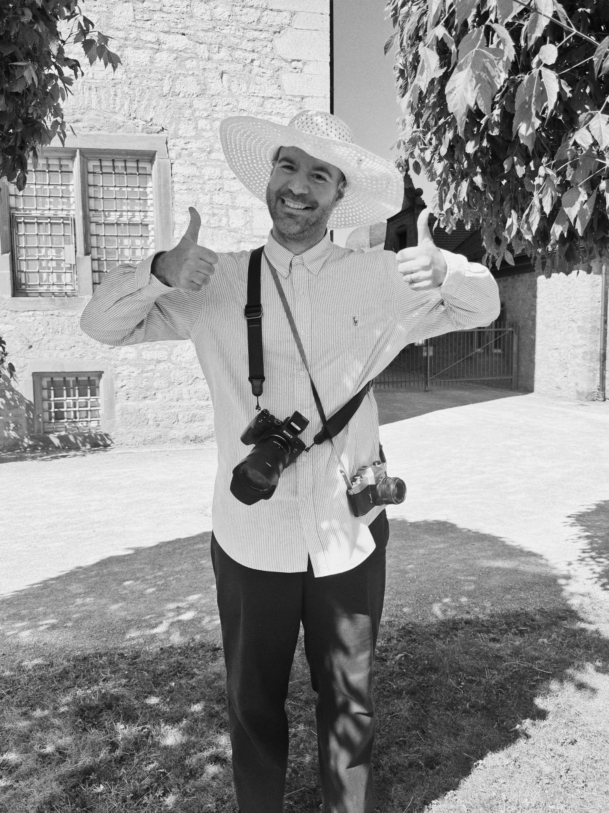

About
Hello, we're two friends Dimitris and Andreas, and together we shoot weddings across Europe.
Dimitris comes from street photography, and that's still how he sees a wedding. Andreas comes from a more video-centric background, with years spent shooting wedding films and being a videographer before we started working together.
Between the two of us, we're documentary wedding photographers: we witness, we don't direct. There's no schedule of posed shots to work through, no pulling you away from your guests to "get the shot." To us, wedding photos and video is about celebrating who you are and to remember the day as it was. We want to capture the real moments of your day, the ones that will make you laugh, cry, and smile.
We offer a full-day flat rate, and we tailor what's included according to your desire, digital or analog photography, videography, or both. We're based between Belgium and Greece and shoot weddings across Europe, with travel further afield for the right couples. If your day is more about real moments than perfect ones, get in touch and let's talk.